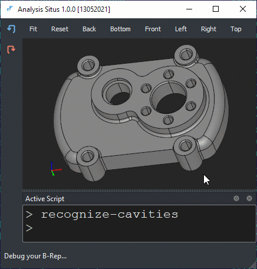

Recognize cavities
The recognition of cavity features allows for detecting all machined volumes without differentiating their types. In our experience, this recognizer can be useful in such contexts as:
- Simplification (defeaturing). To simplify a CAD model you rarely need to care about the machining operation behind a feature you are going to suppress.
- Downstream recognition. Knowning all cavity features would allow at least to exclude them from consideration when searching for other types of features. For example, when detecting the axis of a turned (lathe) part, the contribution of cavities can (and should) be neglected.
The recognizer of cavities starts from all faces having any inner loops with convex dihedral angles. It visits all faces by recursive propagation over these inner edges. Down the road, the following checks are conducted:
- The outcome feature ends up at another inner loop with convex-only adjacency.
- The result of propagation is not the entire shape.
- The feature size is less than the prescribed threshold (infinite by default).

To perform the recognition of cavities, use recognize-cavities command.
> set ids [recognize-cavities] > puts $ids
If the optional -details flag is passed, the function will print out all detected cavities with their base faces, e.g.:
----------------------- Feature -> base faces ----------------------- [11, 12, 48] -> [2] [14] -> [6, 8] [15] -> [6, 8] [16] -> [6, 8] [17] -> [6, 8] [25, 55, 69, 72, 82, 86, 87] -> [8, 49] [60, 73] -> [49] [61, 74] -> [49] [62, 75] -> [49]